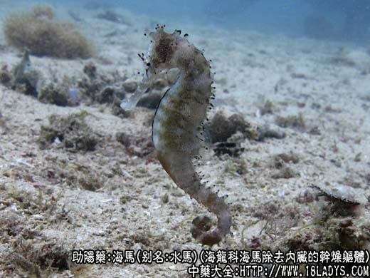
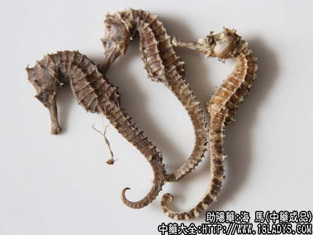
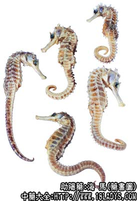

海马为少常用中药。始载《本草拾遗》。现商品有海马、叻海马、海蛆三种。
别名：水马、龙落子鱼。
来源：为海龙科动物克氏海马或斑海马等除去内脏的干燥躯体。海产品，现有人工养殖。
产地：主产于广东沿海各地，此外福建、台湾、山东、江苏、浙江、河北、辽宁等沿海地带亦有生产。
性状鉴别：1、海马体呈长棱方形，弯曲，长8～30厘米，宽2～3厘米，厚0.8～1.5厘米。头略似马头，故名海马。具管状长嘴，头上有冠状突和对生的棘突，冠状突先端具5个小棘突。背胸腹扁棱方形，具11个横环节和7条纵棱嵴，尾长方形，弯曲如象鼻，具39～40个横环节和4条纵棱嵴，横环节和棱嵴亦组成长方格状，交会点显粗钝或呈棘状突。胸腹及尾的前端下方交会点呈棘状突起，先端尖。头后第一环节前生有胸鳍一对。背部第九环节之后生有背鳍，腹尾连接处生有短小臀鳍。雄性海马腹后第1～9尾环节处生有育儿囊，雌性则无此器官。全体为软骨样物质，形成硬甲壳状躯体，无鳞。黄白色，灰棕黄色或淡褐色略有光泽。体轻，质坚韧，不易折断。气微腥，味微咸。
2、刺海马形状与海马相似，但定型刺海马小于定型海马，一般长15厘米左右，最大不超过24厘米，全体环棱交会点，除尾端一小段无棘突外，其余均生有较长尖的棘突。体环11节，尾环35～36节。余与海马略同。
3、海蛆为身长在8厘米以下的幼小海马，形状与海马相同，商品不分种属，统称海蛆。同等药用。
海马、刺海马均以躯体长大，无残损，黄白色者为佳。
功效与作用：补肾壮阳，活血去瘀，其作用为强壮、滋补，功能与海龙大致相同。
炮制：生用。
性味：甘，温。
归经：入肾经。
功能：补肾壮阳，消癓瘕。
主治：肾虚阳痿，难产，癓瘕，疗疮肿毒等症。
临床应用：1、治肾阳虚弱，夜尿频繁，或妇女因体虚而白带多，可用海马煮汤服，单用，或配鱼膘胶，杞子等，方如海马汤。
2、治疮疖，尤其小儿暑疖、脓疱疮，由抵抗力低而引起者，此时虽能用抗菌素控制，但常复发，应从加强身体抵抗力入手，可用海马4.5～6g，加半肥瘦猪肉煮汤，连汤带渣饮服，往往服2～3次后，即见明显好转。
使用注意：阴虚内热、外感、脾胃虚弱者不宜用。
用量：4.5～12g
处方举例：海马汤：海马12g，杞子12g，鱼膘胶12g（溶化），红枣30g，水煎服。
注：除上述两种海马外，尚有同科动物三斑海马和大海马等种类，形态与克氏海马大同小异。如三斑海马，吻管较短，不及头长的1/2。体环第1、4、7、11节，尾环第1、5、9、13、17节的背方环棱交会点呈隆起状嵴。背侧方棘亦较它种为大，体侧背方第1、4、7环节小棘基部，各具一大黑斑，故名三斑海马；大海马，吻管恰等于眶后头长。头部及体环与尾环上的棘，均不甚明显。同作海马使用。
原刺海马多进口于新加坡（新加坡简称石叻或叻埠）故又名石叻海马或叻海马。